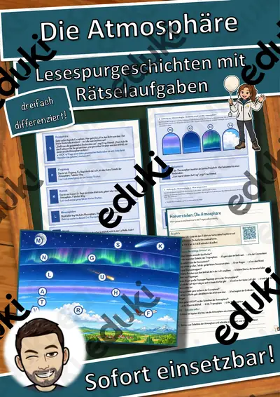
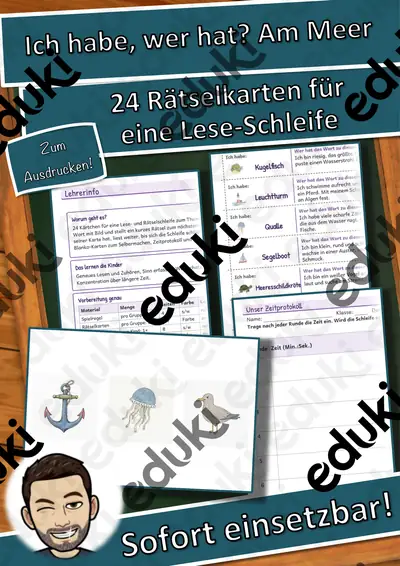

Der Kohlenstoffkreislauf – Lesespurgeschichte mit Rätselaufgaben (Klasse 9)
Mit dieser differenzierten Lesespurgeschichte erarbeiten die Lernenden selbstständig und motivierend, wie der Kohlenstoff durch die Natur wandert und warum zu viel Kohlenstoffdioxid das Klima erwärmt – von der Atmosphäre über Wald, Tier, Boden, fossile Kohle, Kraftwerk und Schornstein bis zum Meer und zum Vulkan. Die Klimaforscherin Frau Wald führt Mia und Tom durch die Landschaft.
So funktioniert die Lesespur: Die Lernenden lesen einen Abschnitt, entnehmen dem Hinweis eine Station des Kreislaufs, suchen sie auf dem farbigen Kreislauf-Plan (einer anschaulichen Landschafts-Illustration) und lesen dort weiter. An jeder richtigen Station sammeln sie einen Buchstaben. Vier Sackgassen (Windrad, Mond, Drachen, Leuchtturm) dienen der Selbstkontrolle und machen deutlich, dass diese Dinge zwar in der Landschaft vorkommen, aber nicht zum Kohlenstoffkreislauf gehören. Am Ende ergeben die gesammelten Buchstaben ein geheimes Lösungswort rund um das Thema.
Inhaltlich verbindet das Material zentrale Themen von Erdkunde und Chemie: den Austausch von Kohlenstoff zwischen Atmosphäre, Pflanzen, Tieren, Boden, Meer und fossilen Speichern, Fotosynthese und Atmung, die Verbrennung fossiler Brennstoffe sowie den natürlichen und den vom Menschen verstärkten Treibhauseffekt. Ein hochaktuelles, lehrplannahes Thema rund um Klima und Klimaschutz.
Das ist enthalten:
- Lesespurgeschichte in drei Niveaus (leicht, mittel, schwer) – ideal zur Differenzierung
- farbiger Kreislauf-Plan mit allen Stationen
- vier eingebettete Aufträge: Begriffe verbinden, Quiz, Rechenaufgabe, Steckbrief
- Hörverstehen mit QR-Code zum Hörtext (Teil A Ankreuzen, Teil B frei schreiben)
- Rätselseite (Wörter-Suchsel und Wissensquiz)
- Ausmalbild
- ausführliches Lösungsblatt mit Fundorten
- das komplette Material zusätzlich als drucksparende Schwarz-Weiß-Vorlage
Geförderte Kompetenzen: sinnentnehmendes und selektives Lesen, Anwenden von Lesestrategien, konzentriertes Zuhören sowie das Verständnis des Kohlenstoffkreislaufs und des Treibhauseffekts.
Einsatz: Übungsphasen, Wochenplan, Stationenlernen, Vertretungsstunden, Freiarbeit und Nachhilfe. Umfang: 25 Seiten.
Ähnliche Materialien

Der Vulkan – Lesespurgeschichte mit Rätselaufgaben (Klasse 7)

Die Atmosphäre – Lesespurgeschichte mit Rätselaufgaben (Klasse 8)

Der Boden – Lesespurgeschichte mit Rätselaufgaben (Klasse 5)

Ich habe, wer hat? Am Meer – Lese-Schleifen – Klasse 1–4

Fossil – Hörverstehen mit Lückentext (interaktiv)

Fossil Lückentext mit Wortspeicher Hörverstehen und Suchsel

Kohlenstoff Lückentext mit Wortspeicher Hörverstehen und Suchsel